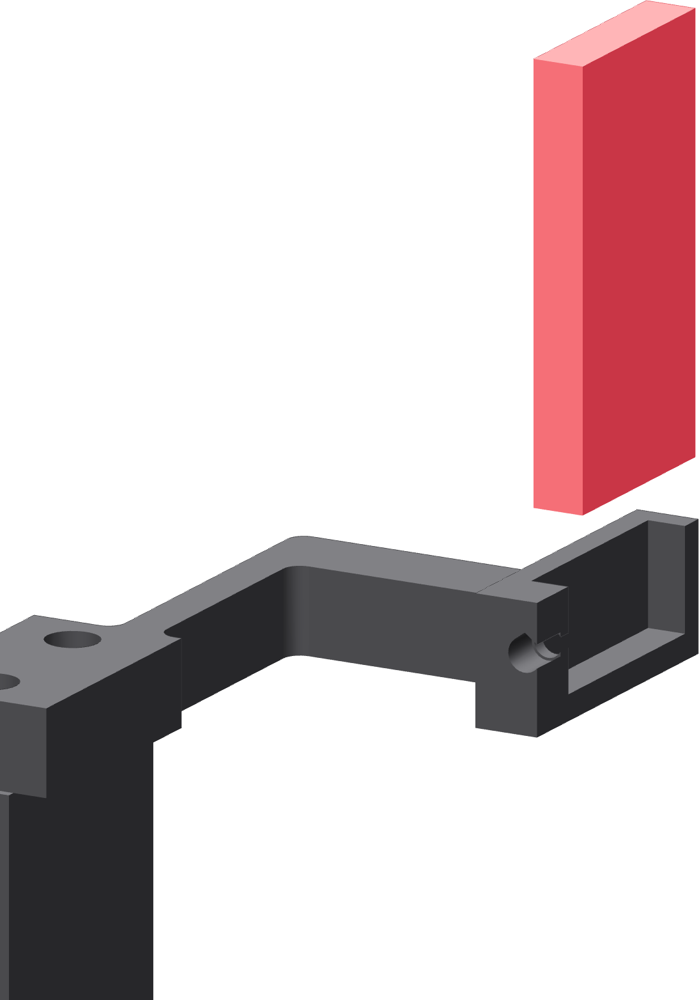

The copper shoe
One 25 mm crosscut from the acquired 1/4 × 2 inch C110 bar. No hole is drilled in it and no thread is cut in it.

Cutting it
- Put the bar's 1/4 inch edge on the BA4555 table, so the 2-inch face stands vertically.
- Set the saw to its 125 FPM low speed. The installed 24 TPI M42 blade then has about six teeth in the 6 mm cut width.
- Cut one 25 mm slice with a light downfeed. Let the gullets clear; do not crowd it.
- Break the cut edge's burr. Leave both broad faces alone — the factory surface is the tube contact.
The result is a 6 × 25 × 50 mm block, stood with the 50 mm mill width vertical.
- Slide the shoe down into the arm's fork until it seats on the printed shelf, one factory broad face toward the tube.
- Tighten the single M3 × 8 side clamp only until the shoe cannot move in the fork.
The preload comes from the tube
A loaded tube pushes the shoe back against the fork's rear wall and deflects the long leaf outward. The delivered bar's thickness window leaves 0.75–1.50 mm of preload, which is what keeps the contact live through runout. The clamp screw's only job is to stop the shoe sliding.